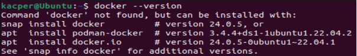

1. Wpierw, sprawdzamy czy na naszej maszynie znajduje się zainstalowany docker. Do tego wykorzystujemy polecenie “docker --version”.
W tym przypadku musimy go zainstalować komendą:
2. Potem możemy włączyć opcje by docker uruchamiał się razem z systemem z użyciem komeny:
3. Teraz możemy stworzyć plik yaml który będzie zawierał informacje o naszym kontenerze.
W konsole wpisujemy:
Wtedy otworzy się pusty plik w który wpisujemy:
4. Teraz gdy plik jest gotowy, używamy:
W tym momencie zaczynamy pobierać obraz do kontenera a usługa zacznie się konfigurować. Zajmie to chwile.
Śledzić to możemy komendą:
5. Jeżeli wszystko zadziałało w naszej sieci działa teraz skonfigurowany serwer lokalny gitlab. By na niego się dostać wystarczy w przeglądarce podać adres maszyny oraz port 80.
Nazwa uytkowanika to root a by znaleźć hasło potrzebujemy użyć:
6. Po zalogowaniu pokauje sie taka strona